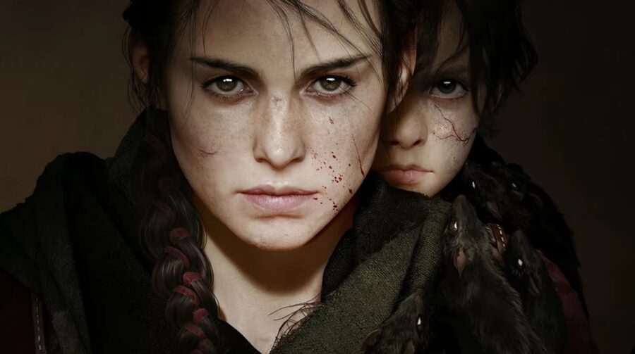
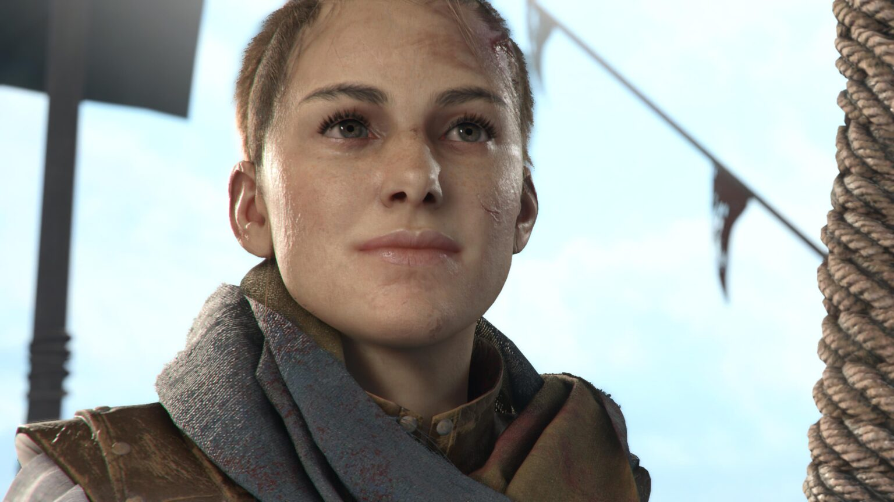
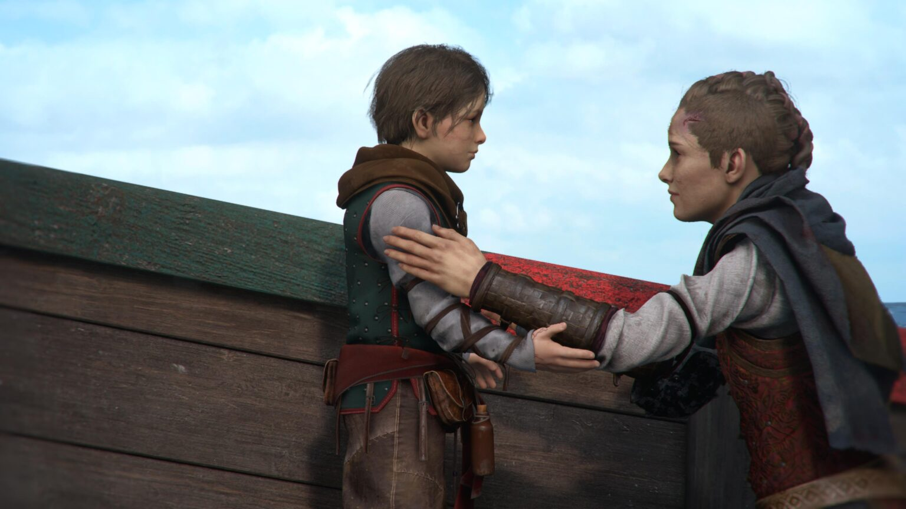

A Plague Tale Requiem: vale a pena?
Segundo jogo da série A Plague Tale, Requiem é mais maduro, completo e visceral; confira a análise.
A Plague Tale Requiem é um daqueles casos em que a sequência é (bem) melhor do que o original.
Vale a pena destacar um ponto importante: seu antecessor chegou “do nada”. Foi uma grata surpresa. E isso, com certeza, afetou a recepção extremamente positiva que ele teve. Foi possível, para muita gente, relevar alguns problemas técnicos, por exemplo, para dar maior valor à narrativa e às inovações e boas intenções dos desenvolvedores.
Dessa vez, não. Requiem chega sob grande expectativa. Todo mundo quer saber como continua a história dos irmãos que não só enfrentaram a Peste Negra como a Inquisição e algo muito mais grave: a Mácula. A comunidade anseia por ver como serão os ratos na nova geração. O que o Asobo Studio trará de novo nesse segundo capítulo.
Pois bem, você confere um pouco mais abaixo. E, não, você não vai se decepcionar.
Em busca da cura
Se no primeiro jogo sua missão era protegê-lo e fugir, agora é encontrar uma cura. A Mácula está tomando conta do menino, fazendo com que os ratos se proliferem ainda mais, e Amicia, sua irmã/heroína vai fazer de tudo para extirpar esse mal do seu corpo. Para isso, conta com algumas ajudas fundamentais durante a história.
Novos e antigos amigos aparecem para tentar fazer com que o mal se afaste de Hugo. Enquanto isso, a própria Amicia também tem que lidar com os seus fantasmas. A menina assustada, mas corajosa, agora é também violenta e vingativa. E até o pequeno e sempre assustado Hugo está mais confiante. Eles querem a cura e vão atrás dela a todo custo.
A narrativa e o enredo continuam sendo o ponto forte de A Plague Tale em seu segundo capítulo. Ainda mais emocionante do que o primeiro. Mais forte. Mais visceral. E cheio de surpresas.
Aqui, como de costume, você não encontrará spoilers. Diremos apenas que trata-se de uma história mais de vingança do que fuga. Com o stealth ainda sendo fundamental, mas estimulando bem mais o combate do que seu antecessor. E nessa hora é a primeira crítica: falta um comando de esquiva. Quando os guardas vêm até você, esquece.
Você só pode contra-atacar com o quadrado, dando um golpe que os imobiliza, ou então usar o triângulo para liquidá-los com uma faca – que é um item consumível, então é preciso dar sorte de ter uma no seu inventário. Usar o bola para rolar para um lado, por exemplo, seria uma saída interessante em momentos como esse.
Tirando isso, a experiência é bem bacana com as armas que Amicia tem a seu dispor. Aos poucos, ela vai liberando não só as habilidades da sua skill tree, como também artefatos e materiais químicos para combinar e usar contra ratos e humanos. As soluções podem ser bem criativas, além de poderem gerar momentos épicos em certas batalhas.
E você vai precisar de tudo o que tiver a seu dispor. Afinal, os inimigos são mais mortais do que nunca – e há mais ratos, bem mais ratos. Nem sempre isso vai ser ruim, acredite. Mas quando é, meu amigo, é assustador. Nojento. Chega a dar coceira na pele de tanto nervoso. E, sim, certas vezes continua sendo meio tosco ter tanto rato assim, mas é do jogo.
Evoluiu
Visualmente, A Plague Tale Requiem agrada bastante. Os cenários são lindos, e os personagens também estão bem feitos. É claro, não chegam ao nível que se vê nos AAA mais famosos, mas cumprem seu papel. O level design é outro ponto forte. Os locais para explorar e a variação de mecânicas para isso merecem elogios.
Algo que também ajuda na imersão é o design de áudio. Da trilha até os efeitos sonoros, tudo agrada muito. E, para melhorar as coisas para os brasileiros, o game tem legendas em português. Dublagem não, mas já é alguma coisa, não?
Por outro lado, um ponto negativo é que chega um momento em que as missões ficam meio repetitivas — algo comum em jogos single-player. É um tal de empurrar o carrinho aqui, atirar com fogo pra abrir caminho ali e apagar fogo pros ratos matarem alguém acolá… Não chega a incomodar, mas dá para notar.
O mesmo acontece com os problemas técnicos. Há, sim, quedas de framerate em vários momentos. E isso porque o jogo já roda com apenas 30 FPS. Em pleno 2022, ano da tecnologia… decepciona. Assim como o loading um pouco demorado para um game de PlayStation 5. Só que, mais uma vez, A Plague Tale Requiem é totalmente “jogável” mesmo assim.
Poderíamos falar do que falta. Mais exploração, uma IA mais desafiadora (que aparece até no Novo Game+), mecânicas mais avançadas de combate… Mas é hora de valorizar o trabalho. Afinal, fica claro que Requiem é um grande upgrade em relação a Innocence. Não é perfeito, mas melhora o que já era bom e ainda corrige pontos que deixavam a desejar no antecessor.
A Plague Tale Requiem: vale a pena?
Quando A Plague Tale Inoccence foi lançado, em 2019, surpreendeu muita gente. Eu confesso que gostei do jogo no geral, mas optei por uma abordagem mais rigorosa na análise. Afinal, havia problemas técnicos, sim, que incomodavam. Mas a comunidade o recepcionou muito mais positivamente do que negativamente.
A ponto de fazer de A Plague Tale Requiem um jogo relativamente hypado e aguardado nesse ano. E pode-se dizer que foi uma espera que valeu, sim, a pena. O jogo está à venda por R$ 299 na PlayStation Store, e o MeuPS recomenda bastante sua aquisição, caso você seja um jogador que curte histórias lineares single player.
Os problemas técnicos ainda existem, mas em escala bem menor. O game está lindo, a jogabilidade aprimorada e a narrativa, grande destaque do seu antecessor, não decepciona. A aventura é curtinha, cerca de 20 horas, mas agrada em cada segundo – principalmente quando ganha ares mais de vingança.
Fonte:MeuPlastation